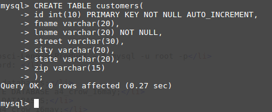
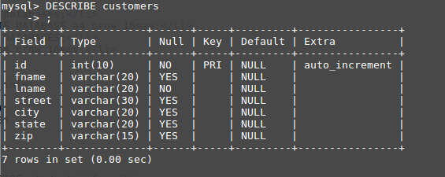

Full Stack! Created by Savi/ May 2017
I want to be a Full Stack web developer- but what does that mean?
Use google fonts
Background pic
link to sites
explain full
explain stack
LAMP stack
in-line links to the key words
explain database in general using text and illustration
explain MySQL text and illustration
illustate a typical DB use illustration.
list and explain the mySQL CLI steps to create a DB, table, records
What is "Full"?
Full is referencing to both the front and back end programming.
The front end is what you see on a day to day bases. The back end is where the secrets are,
sends content and receives input from the front end.
What is "Stack"?
Stack is the group of programs are being used.
For example, HTML, CSS, and JavaScript is used to code the
looks and the interactions of the web page. PHP and MySQL are used
to tell the server how to handle and store the information.
LAMP stack is used on my server computer.
What is "LAMP "?
A LAMP is used on a web server that allows the server to set
up and send content.
L = Linux - server operating system that we use
A = Apache - The web server
M = MySQL - The data base our server uses
P = PHP - The programming language used on the server
What is DB?
A more simple and organized way to save things ont a server.
Lifeblood of many businesses, track employees, customers
products and suppliers
What is MySQL?
Used #2 among the DB's worldwide. Orical is #1 becuase it
has more professional support but you have to pay for that.
MySQL is free boi.
What is SQL?
It stands for Structured Query Language. MySQL is the name
of the database.
What is PHP?
IDK SISTA
- compsci@compsci-Lenovo-Product ~ $ mysql -u root -p
- Enter password:
- mysql>
- mysql> show databases;
- mysql> CREATE DATABASE a4_crow_16may;
- mysql> SHOW DATABASES;
- mysql> USE a4_crow_16may;
-
mysql> CREATE TABLE student_info(
-> id int(8),
-> fname varchar(20),
-> lname varchar (20)
-> );
- mysql> DESCRIBE student_info;
- DROP DATABASE a4_crow_16may;
-

-
